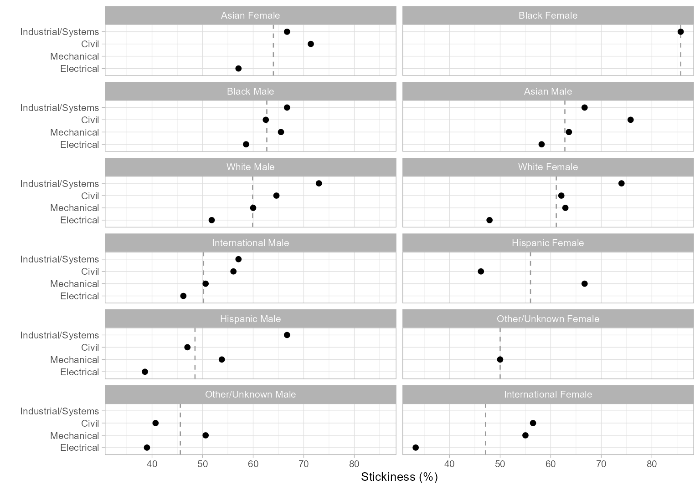

We illustrate using midfieldr and other R packages to work with longitudinal student data, focusing on the overall process (leaving R package details to subsequent articles). The work is organized in three major topics:
- Obtaining a credible population and filtering the records to match.
- Manipulating the data to produce the desired metric and groupings.
- Conditioning the results for dissemination in tables and charts.
Scope
Records. Data: student, term, and
degree from midfielddata, filtered for data sufficiency,
restricted to degree-seeking students, and excluding post-baccalaureate
records.
Population. The set of unique student IDs from the above records.
Programs. Data: cip from midfieldr. We study
four Engineering majors: Civil, Electrical, Industrial/Systems, and
Mechanical.
Quantitative metric. Program stickiness: the ratio \small (S) of the number of graduates of a program \small (N_\textrm{grad}) to the number ever enrolled in the program \small (N_\textrm{ever}).
\small S = \frac{\small N_\textrm{grad}}{\small N_\textrm{ever}} = \frac{\small\mathrm{number\ of\ graduates\ of\ a\ program}}{\small\mathrm{number\ ever\ enrolled\ in\ the\ program}}
However a student finds their way to a program (just entering college, transferring, or switching majors), the program has an opportunity to see the student through to graduation. Stickiness is the fraction of students a program entices to “stick to” it through completion (Ohland et al. 2012).
Blocs. The metric requires two blocs: students ever enrolled in the programs; and timely graduates of the programs.
Groupings. Group the findings by program, race/ethnicity, and sex.
Dissemination. Exclude groupings too small to preserve anonymity; edit column names to suit the audience; condition/transform data as needed for tables or charts.
Definitions
For understanding our data manipulation process.
The population is usually expected to be degree-seeking, i.e., attempting to complete a program.
Program completion means satisfying the requirements for a first baccalaureate degree.
The timely-completion term is the term by which we would consider their completion “timely”, default 6 years after admission.
The data sufficiency test identifies students whose admission term and projected timely completion term lie within the range of data available from their institution—a necessary and sufficient condition for determining completion status.
Completion status is “NA” for non-completion; “timely” for students graduating no later than their timely-completion term; and “late” otherwise.
R packages
library("midfieldr") # working with student records
library("midfielddata") # practice data
library("data.table") # data manipulation
library("gt") # tables
library("ggplot2") # chartsRefining the records
We load three of the midfielddata data tables. This study does not
require the course data table. If it had been required, it
would be included here and in similar steps throughout the article.
data(student, term, degree)We copy the original data sets, giving them new names
{student_source, term_source, degree_source} and new
locations in memory. This step allows us to use the more convenient
names {student, term, degree} for our “working” data tables
without updating the source tables “by reference.” Reference semantics
in data.table is documented in (Reference Semantics
2026).
For comparing results as we refine the population, we start with the following number of rows in the original data frames.
| Table | Original tables |
|---|---|
| student | 97,555 |
| term | 639,915 |
| degree | 49,665 |
Select basic variables
For this first section of the work, we (optionally) use
select_basic_cols() to subset the data tables, retaining
the minimum set of columns required by midfieldr functions.
student <- select_basic_cols(student)
term <- select_basic_cols(term)
degree <- select_basic_cols(degree)
student
#> mcid race sex
#> <char> <char> <char>
#> 1: MCID3111142225 Asian Male
#> 2: MCID3111142283 Asian Female
#> 3: MCID3111142290 Asian Male
#> ---
#> 97553: MCID3112898894 White Female
#> 97554: MCID3112898895 White Female
#> 97555: MCID3112898940 Other/Unknown Male
term
#> mcid term cip6 institution level
#> <char> <char> <char> <char> <char>
#> 1: MCID3111142225 19881 140901 Institution B 01 First-year
#> 2: MCID3111142283 19881 240102 Institution J 01 First-year
#> 3: MCID3111142283 19883 240102 Institution J 01 First-year
#> ---
#> 639913: MCID3112898894 20181 451001 Institution B 01 First-year
#> 639914: MCID3112898895 20181 302001 Institution B 01 First-year
#> 639915: MCID3112898940 20181 050103 Institution B 01 First-year
degree
#> mcid term_degree cip6
#> <char> <char> <char>
#> 1: MCID3111142225 19881 141001
#> 2: MCID3111142290 19921 141001
#> 3: MCID3111142294 19903 141001
#> ---
#> 49663: MCID3112839623 20181 160102
#> 49664: MCID3112845220 20181 270101
#> 49665: MCID3112845673 20174 090101Data sufficiency
Only those records passing the data sufficiency test are included in a population study. We start with the full set of unique student IDs.
DT <- term[, .(mcid)]
DT <- unique(DT)
DT
#> mcid
#> <char>
#> 1: MCID3111142225
#> 2: MCID3111142283
#> 3: MCID3111142290
#> ---
#> 97553: MCID3112898894
#> 97554: MCID3112898895
#> 97555: MCID3112898940We use timely_term() to determine the timely completion
term for every student and add columns to the data frame to support
those findings.
DT <- timely_term(DT, midf_table = term)
DT
#> mcid term_i level_i adj_span timely_term
#> <char> <char> <char> <num> <char>
#> 1: MCID3111142225 19881 01 First-year 6 19933
#> 2: MCID3111142283 19881 01 First-year 6 19933
#> 3: MCID3111142290 19881 01 First-year 6 19933
#> ---
#> 97553: MCID3112898894 20181 01 First-year 6 20233
#> 97554: MCID3112898895 20181 01 First-year 6 20233
#> 97555: MCID3112898940 20181 01 First-year 6 20233Next, we can (optionally) reduce the number of columns to just those needed in the next step.
DT <- DT[, .(mcid, term_i, timely_term)]
DT
#> mcid term_i timely_term
#> <char> <char> <char>
#> 1: MCID3111142225 19881 19933
#> 2: MCID3111142283 19881 19933
#> 3: MCID3111142290 19881 19933
#> ---
#> 97553: MCID3112898894 20181 20233
#> 97554: MCID3112898895 20181 20233
#> 97555: MCID3112898940 20181 20233We operate on this output with data_sufficiency() to
identify records that pass or fail the data sufficiency test and add
columns to the data frame to support those findings.
DT <- data_sufficiency(DT, midf_table = term)
DT
#> mcid term_i timely_term data_range data_sufficiency
#> <char> <char> <char> <char> <char>
#> 1: MCID3111142225 19881 19933 19881-20181 exclude-lower
#> 2: MCID3111142283 19881 19933 19881-20096 exclude-lower
#> 3: MCID3111142290 19881 19933 19881-20096 exclude-lower
#> ---
#> 97553: MCID3112898894 20181 20233 19881-20181 exclude-upper
#> 97554: MCID3112898895 20181 20233 19881-20181 exclude-upper
#> 97555: MCID3112898940 20181 20233 19881-20181 exclude-upperSummary check. A brief aside to summarize the numbers of students identified to include and exclude. We run a similar summary at a number of points in the analysis as a credibility check.
DT[, .N, by = c("data_sufficiency")][order(-N)]
#> data_sufficiency N
#> <char> <int>
#> 1: include 76875
#> 2: exclude-upper 17934
#> 3: exclude-lower 2746We filter to retain rows labeled “include” and drop all but the ID column.
DT <- DT[data_sufficiency == "include", .(mcid)]
DT
#> mcid
#> <char>
#> 1: MCID3111142689
#> 2: MCID3111142782
#> 3: MCID3111142881
#> ---
#> 76873: MCID3112785480
#> 76874: MCID3112800920
#> 76875: MCID3112870009Degree seeking
We require all students in our study to be degree-seeking. By design,
the student table contains only degree-seeking students. We
inner-join the ID column from the student table with our
working data frame DT, matching on mcid, to
remove any non-degree-seeking students.
student_col <- student[, .(mcid)]
DT <- student_col[DT, on = "mcid", nomatch = NULL]
DT
#> mcid
#> <char>
#> 1: MCID3111142689
#> 2: MCID3111142782
#> 3: MCID3111142881
#> ---
#> 76873: MCID3112785480
#> 76874: MCID3112800920
#> 76875: MCID3112870009In this instance, no students were removed because the midfielddata practice data contains only degree-seeking students. However, our process would not be complete without this step.
Population
The steps above—filtering for data sufficiency and degree-seeking—yield the baseline population for this study.
population <- copy(DT)We use an inner join, matching on mcid, to subset the
data tables to retain records for this population only.
student <- population[student_source, on = "mcid", nomatch = NULL]
term <- population[term_source, on = "mcid", nomatch = NULL]
degree <- population[degree_source, on = "mcid", nomatch = NULL]| Table | Original tables | Baseline population |
|---|---|---|
| student | 97,555 | 76,875 |
| term | 639,915 | 531,419 |
| degree | 49,665 | 43,903 |
Undergraduate terms
We are usually interested in only those records leading to a
student’s first degree (if any). record_bracket() assigns
the label “undergrad” to the bracket of terms before a first degree and
“post-bacc” (for post-baccalaureate) to all terms after a degree. The
function applies to the term, course, and
degree data tables because they have columns of term
values.
term <- record_bracket(term, midf_table = degree)
degree <- record_bracket(degree, midf_table = degree)
# View relevant columns
term[order(-bracket), .(mcid, term, term_1st_degree, bracket)]
#> mcid term term_1st_degree bracket
#> <char> <char> <char> <char>
#> 1: MCID3111142689 19883 19913 undergrad
#> 2: MCID3111142782 19883 19903 undergrad
#> 3: MCID3111142782 19885 19903 undergrad
#> ---
#> 531417: MCID3112501004 20161 20133 post-bacc
#> 531418: MCID3112595308 20161 20154 post-bacc
#> 531419: MCID3112619703 20161 20154 post-bacc
degree[order(-bracket), .(mcid, term_degree, term_1st_degree, bracket)]
#> mcid term_degree term_1st_degree bracket
#> <char> <char> <char> <char>
#> 1: MCID3111142689 19913 19913 undergrad
#> 2: MCID3111142782 19903 19903 undergrad
#> 3: MCID3111142881 19894 19894 undergrad
#> ---
#> 43901: MCID3112290406 20143 20111 post-bacc
#> 43902: MCID3112347391 20133 20101 post-bacc
#> 43903: MCID3112407729 20133 20123 post-baccSummary check. Numbers of students in each category.
term[, .N, by = c("bracket")][order(-N)]
#> bracket N
#> <char> <int>
#> 1: undergrad 525446
#> 2: post-bacc 5973
degree[, .N, by = c("bracket")][order(-N)]
#> bracket N
#> <char> <int>
#> 1: undergrad 43857
#> 2: post-bacc 46We keep the rows labeled “undergrad.” Note that we are dropping rows by values in the term variable without affecting the number of students in the population.
term <- term[bracket == "undergrad"]
degree <- degree[bracket == "undergrad"]
# drop temporary columns
term[, c("term_1st_degree", "bracket") := NULL]
degree[, c("term_1st_degree", "bracket") := NULL]With this step, we conclude the development of what we are calling
our *_baseline tables, filtered for data sufficiency and
degree-seeking and excluding post-baccalaureate terms.
Review the results.
look_at(student_baseline)
#> Classes 'data.table' and 'data.frame': 76875 obs. of 13 variables:
#> $ mcid : chr "MCID3111142689" "MCID3111142782" "MCID3111142881" "M"..
#> $ race : chr "Hispanic" "Hispanic" "International" "International" ..
#> $ sex : chr "Female" "Female" "Male" "Male" ...
#> $ institution : chr "Institution B" "Institution J" "Institution B" "Inst"..
#> $ transfer : chr "First-Time Transfer" "First-Time Transfer" "First-Ti"..
#> $ hours_transfer: num NA NA NA NA NA NA NA NA NA NA ...
#> $ age_desc : chr "Under 25" "Under 25" "25 and Older" "Under 25" ...
#> $ us_citizen : chr "Yes" "Yes" "Yes" "No" ...
#> $ home_zip : chr NA "22101" NA NA ...
#> $ high_school : chr NA "471395" NA NA ...
#> $ sat_math : num NA 520 NA NA NA NA NA NA NA NA ...
#> $ sat_verbal : num NA 490 NA NA NA NA NA NA NA NA ...
#> $ act_comp : num NA NA NA NA NA NA NA NA NA NA ...
look_at(term_baseline)
#> Classes 'data.table' and 'data.frame': 525446 obs. of 13 variables:
#> $ mcid : chr "MCID3111142689" "MCID3111142782" "MCID311114278"..
#> $ cip6 : chr "090401" "260101" "260101" "260101" ...
#> $ institution : chr "Institution B" "Institution J" "Institution J" "..
#> $ level : chr "01 First-year" "01 First-year" "02 Second-year""..
#> $ standing : chr "Good Standing" "Good Standing" "Good Standing" "..
#> $ coop : chr "No" "No" "No" "No" ...
#> $ hours_term : num 9 16 4 13 4 4 10 9 18 6 ...
#> $ hours_term_attempt : num 9 16 4 13 4 4 10 9 18 6 ...
#> $ hours_cumul : num 18 26 30 56 60 64 74 83 21 27 ...
#> $ hours_cumul_attempt: num 18 26 30 56 60 64 74 83 21 27 ...
#> $ gpa_term : num 3.33 2.8 3 2.84 4 3.25 2.26 2.43 2.55 2.15 ...
#> $ gpa_cumul : num 3.05 2.57 2.63 2.53 2.63 2.67 2.61 2.59 2.76 2.62..
#> $ term : chr "19883" "19883" "19885" "19893" ...
look_at(degree_baseline)
#> Classes 'data.table' and 'data.frame': 43857 obs. of 5 variables:
#> $ mcid : chr "MCID3111142689" "MCID3111142782" "MCID3111142881" "MCID"..
#> $ cip6 : chr "090401" "260101" "450601" "141001" ...
#> $ institution: chr "Institution B" "Institution J" "Institution B" "Institu"..
#> $ degree : chr "Bachelor of Arts in Journalism" "Bachelor of Science in"..
#> $ term_degree: chr "19913" "19903" "19894" "19901" ...
look_at(population)
#> Classes 'data.table' and 'data.frame': 76875 obs. of 1 variable:
#> $ mcid: chr "MCID3111142689" "MCID3111142782" "MCID3111142881" "MCID3111142"..| Table | Original tables | Baseline population | Baseline tables |
|---|---|---|---|
| student | 97,555 | 76,875 | 76,875 |
| term | 639,915 | 531,419 | 525,446 |
| degree | 49,665 | 43,903 | 43,857 |
From this point forward, anytime we need a fresh copy of any of the
data tables, we copy the *_baseline version. Anytime we
need a starting population, we copy population.
Programs
Here we begin the procedures that transform our baseline records and
population into case-specific programs, blocs, metrics, and groupings.
In this section we to search the CIP data table for the 6-digit codes
for our programs. The cip dataset loads with midfieldr.
Search for program codes
filter_programs() searches dframe for
string patterns. Searching for “engineering” yields 2-digit CIP codes
14, 15, 29, and 51. From the program names, the 2-digit code we want is
14.
filter_programs(dframe = cip, pattern = "engineering")
#> cip6name cip6
#> <char> <char>
#> 1: Engineering, General 140101
#> 2: Pre-Engineering 140102
#> 3: Aerospace, Aeronautical and Astronautical, Space Engineering 140201
#> 4: Agricultural, Biological Engineering and Bioengineering 140301
#> 5: Architectural Engineering 140401
#> 6: Biomedical, Medical Engineering 140501
#> 7: Ceramic Sciences and Engineering 140601
#> 8: Chemical Engineering 140701
#> ---
#> 112: Engineering Design 151502
#> 113: Packaging Science 151503
#> 114: Engineering-Related Fields, Other 151599
#> 115: Nanotechnology 151601
#> 116: Engineering Related Technologies, Technicians, Other 159999
#> 117: Combat Systems Engineering 290301
#> 118: Engineering Acoustics 290303
#> 119: Assistive, Augmentative Technology and Rehabiliation Engineering 512312
#> cip4name cip4
#> <char> <char>
#> 1: Engineering, General 1401
#> 2: Engineering, General 1401
#> 3: Aerospace, Aeronautical and Astronautical Engineering 1402
#> 4: Agricultural, Biological Engineering and Bioengineering 1403
#> 5: Architectural Engineering 1404
#> 6: Biomedical, Medical Engineering 1405
#> 7: Ceramic Sciences and Engineering 1406
#> 8: Chemical Engineering 1407
#> ---
#> 112: Engineering-Related Fields 1515
#> 113: Engineering-Related Fields 1515
#> 114: Engineering-Related Fields 1515
#> 115: Nanotechnology 1516
#> 116: Engineering-Related Technologies, Technicians, Other 1599
#> 117: Military Applied Sciences 2903
#> 118: Military Applied Sciences 2903
#> 119: Rehabilitation and Therapeutic Professions 5123
#> cip2name cip2
#> <char> <char>
#> 1: Engineering 14
#> 2: Engineering 14
#> 3: Engineering 14
#> 4: Engineering 14
#> 5: Engineering 14
#> 6: Engineering 14
#> 7: Engineering 14
#> 8: Engineering 14
#> ---
#> 112: Engineering Technology 15
#> 113: Engineering Technology 15
#> 114: Engineering Technology 15
#> 115: Engineering Technology 15
#> 116: Engineering Technology 15
#> 117: Military Technologies 29
#> 118: Military Technologies 29
#> 119: Health Professions and Related Clinical Sciences 51Subset the full cip for the Engineering code 14 and
search that result for “civil”. We find that Civil Engineering is
encoded by the 4-digit code 1408.
engr_cip <- filter_programs(cip, "^14")
filter_programs(engr_cip, "civil")
#> cip6name cip6 cip4name cip4
#> <char> <char> <char> <char>
#> 1: Civil Engineering, General 140801 Civil Engineering 1408
#> 2: Geotechnical Engineering 140802 Civil Engineering 1408
#> 3: Structural Engineering 140803 Civil Engineering 1408
#> 4: Transportation and Highway Engineering 140804 Civil Engineering 1408
#> 5: Water Resources Engineering 140805 Civil Engineering 1408
#> 6: Civil Engineering, Other 140899 Civil Engineering 1408
#> cip2name cip2
#> <char> <char>
#> 1: Engineering 14
#> 2: Engineering 14
#> 3: Engineering 14
#> 4: Engineering 14
#> 5: Engineering 14
#> 6: Engineering 14Repeat for “electrical” and obtain the 4-digit code 1410.
filter_programs(engr_cip, "electrical")
#> cip6name cip6
#> <char> <char>
#> 1: Electrical, Electronics and Communications Engineering 141001
#> 2: Laser and Optical Engineering 141003
#> 3: Telecommunications Engineering 141004
#> 4: Electrical, Electronics and Communications Engineering, Other 141099
#> cip4name cip4 cip2name
#> <char> <char> <char>
#> 1: Electrical, Electronics and Communications Engineering 1410 Engineering
#> 2: Electrical, Electronics and Communications Engineering 1410 Engineering
#> 3: Electrical, Electronics and Communications Engineering 1410 Engineering
#> 4: Electrical, Electronics and Communications Engineering 1410 Engineering
#> cip2
#> <char>
#> 1: 14
#> 2: 14
#> 3: 14
#> 4: 14Continuing in a similar fashion, we find that our programs have the following 4-digit codes.
- Civil Engineering 1408
- Electrical Engineering 1410
- Mechanical Engineering 1419
- Industrial/Systems Engineering 1427, 1435, 1436, and 1437.
Note that in general an accredited engineering degree-granting program is encoded by a single 4-digit CIP code, but not always. In addition, the code or codes used by a degree-granting program can vary over time and by institution.
Construct the programs table
We create a search string of the desired 4-digit codes.
codes_we_want <- c("^1408", "^1410", "^1419", "^1427", "^1435", "^1436", "^1437")
programs <- filter_programs(engr_cip, codes_we_want)
programs
#> cip6name cip6
#> <char> <char>
#> 1: Civil Engineering, General 140801
#> 2: Geotechnical Engineering 140802
#> 3: Structural Engineering 140803
#> 4: Transportation and Highway Engineering 140804
#> 5: Water Resources Engineering 140805
#> 6: Civil Engineering, Other 140899
#> 7: Electrical, Electronics and Communications Engineering 141001
#> 8: Laser and Optical Engineering 141003
#> 9: Telecommunications Engineering 141004
#> 10: Electrical, Electronics and Communications Engineering, Other 141099
#> 11: Mechanical Engineering 141901
#> 12: Systems Engineering 142701
#> 13: Industrial Engineering 143501
#> 14: Manufacturing Engineering 143601
#> 15: Operations Research 143701
#> cip4name cip4 cip2name
#> <char> <char> <char>
#> 1: Civil Engineering 1408 Engineering
#> 2: Civil Engineering 1408 Engineering
#> 3: Civil Engineering 1408 Engineering
#> 4: Civil Engineering 1408 Engineering
#> 5: Civil Engineering 1408 Engineering
#> 6: Civil Engineering 1408 Engineering
#> 7: Electrical, Electronics and Communications Engineering 1410 Engineering
#> 8: Electrical, Electronics and Communications Engineering 1410 Engineering
#> 9: Electrical, Electronics and Communications Engineering 1410 Engineering
#> 10: Electrical, Electronics and Communications Engineering 1410 Engineering
#> 11: Mechanical Engineering 1419 Engineering
#> 12: Systems Engineering 1427 Engineering
#> 13: Industrial Engineering 1435 Engineering
#> 14: Manufacturing Engineering 1436 Engineering
#> 15: Operations Research 1437 Engineering
#> cip2
#> <char>
#> 1: 14
#> 2: 14
#> 3: 14
#> 4: 14
#> 5: 14
#> 6: 14
#> 7: 14
#> 8: 14
#> 9: 14
#> 10: 14
#> 11: 14
#> 12: 14
#> 13: 14
#> 14: 14
#> 15: 14While we searched cip using 4-digit codes, it is the
6-digit codes that we want for matching to the student records later.
Here we drop all but the 6-digit information.
programs <- programs[, .(cip6name, cip6)]
programs
#> cip6name cip6
#> <char> <char>
#> 1: Civil Engineering, General 140801
#> 2: Geotechnical Engineering 140802
#> 3: Structural Engineering 140803
#> 4: Transportation and Highway Engineering 140804
#> 5: Water Resources Engineering 140805
#> 6: Civil Engineering, Other 140899
#> 7: Electrical, Electronics and Communications Engineering 141001
#> 8: Laser and Optical Engineering 141003
#> 9: Telecommunications Engineering 141004
#> 10: Electrical, Electronics and Communications Engineering, Other 141099
#> 11: Mechanical Engineering 141901
#> 12: Systems Engineering 142701
#> 13: Industrial Engineering 143501
#> 14: Manufacturing Engineering 143601
#> 15: Operations Research 143701The program names in cip are usually too long for
effective use—user-defined names are nearly always required. So we add a
program variable with values “CE” (Civil Engineering), “EE”
(electrical), “ME” (Mechanical), and “ISE” (Industrial/Systems
Engineering).
programs[, program := fcase(
cip6 %like% "^1408", "CE",
cip6 %like% "^1410", "EE",
cip6 %like% "^1419", "ME",
cip6 %like% c("^1427|^1435|^1436|^1437"), "ISE",
default = NA_character_
)]While we don’t use the original 6-digit program names, we can preserve them for reference. Here we abbreviate some of them for a more compact display.
programs[, cip6name := gsub("Engineering", "Engng", cip6name)]
programs[, cip6name := gsub("Communications", "Commns", cip6name)]
programs[, cip6name := gsub("Electrical, Electronics", "Elec, Electr,", cip6name)]
programs
#> cip6name cip6 program
#> <char> <char> <char>
#> 1: Civil Engng, General 140801 CE
#> 2: Geotechnical Engng 140802 CE
#> 3: Structural Engng 140803 CE
#> 4: Transportation and Highway Engng 140804 CE
#> 5: Water Resources Engng 140805 CE
#> 6: Civil Engng, Other 140899 CE
#> 7: Elec, Electr, and Commns Engng 141001 EE
#> 8: Laser and Optical Engng 141003 EE
#> 9: Telecommunications Engng 141004 EE
#> 10: Elec, Electr, and Commns Engng, Other 141099 EE
#> 11: Mechanical Engng 141901 ME
#> 12: Systems Engng 142701 ISE
#> 13: Industrial Engng 143501 ISE
#> 14: Manufacturing Engng 143601 ISE
#> 15: Operations Research 143701 ISEOur programs data frame is complete: 15 six-digit codes are encoded
using 4 program labels. This data frame can sit in memory (or written to
file) until we’re ready to filter the blocs by program, joining data
frames by matching on the cip6 variable.
Blocs and groupings
The stickiness metric requires these blocs:
- students with timely completion from the study programs
- students ever enrolled in these programs
And we selected these groupings:
- program
- race/ethnicity
- sex
We have a lot of flexibility in the order in which we construct our blocs and groupings, so what follows is only one of several effective solutions. Our approach here is to construct a bloc, filter by program, join the demographics, and repeat for the next bloc.
First, we copy so our work will not affect the baseline material by reference.
Timely graduates
We start with the baseline population. Like we did with the original
data files, we copy it to protect population from changes
by reference.
DT <- copy(population)
DT
#> mcid
#> <char>
#> 1: MCID3111142689
#> 2: MCID3111142782
#> 3: MCID3111142881
#> ---
#> 76873: MCID3112785480
#> 76874: MCID3112800920
#> 76875: MCID3112870009Filter by program
We left-join the CIP column from the degree table,
matching on mcid. That the number of rows has increased
indicates that some students have more than one degree in their first
degree term.
degree_col <- degree[, .(mcid, cip6)]
DT <- degree_col[DT, on = "mcid"]
DT
#> mcid cip6
#> <char> <char>
#> 1: MCID3111142689 090401
#> 2: MCID3111142782 260101
#> 3: MCID3111142881 450601
#> ---
#> 76944: MCID3112785480 <NA>
#> 76945: MCID3112800920 <NA>
#> 76946: MCID3112870009 <NA>Summary check. Numbers of students completing \small N degrees.
x <- DT[, .(N_degrees = .N), by = "mcid"]
x[, .(N_students = .N), by = "N_degrees"]
#> N_degrees N_students
#> <int> <int>
#> 1: 1 76804
#> 2: 2 71We use an inner-join with our programs data frame to
retain only the rows that have matching CIP codes in both tables.
programs_cols <- programs[, .(cip6, program)]
DT <- programs_cols[DT, on = "cip6", nomatch = NULL]
DT
#> cip6 program mcid
#> <char> <char> <char>
#> 1: 141001 EE MCID3111142965
#> 2: 141001 EE MCID3111145102
#> 3: 141001 EE MCID3111146537
#> ---
#> 3429: 141901 ME MCID3112618976
#> 3430: 141001 EE MCID3112619484
#> 3431: 141901 ME MCID3112641535We drop the cip6 column, leaving the
program column with our user-defined program labels. These
students all have a degree in one or more of our four engineering
programs.
DT[, cip6 := NULL]
DT <- unique(DT)
DT
#> program mcid
#> <char> <char>
#> 1: EE MCID3111142965
#> 2: EE MCID3111145102
#> 3: EE MCID3111146537
#> ---
#> 3429: ME MCID3112618976
#> 3430: EE MCID3112619484
#> 3431: ME MCID3112641535Filter for timely completion
We want to retain timely graduates only. We start by obtaining the timely completion term then selecting the variables we need to go forward.
DT <- timely_term(DT)
DT <- DT[, .(mcid, program, timely_term)]
DT
#> mcid program timely_term
#> <char> <char> <char>
#> 1: MCID3111142965 EE 19941
#> 2: MCID3111145102 EE 19941
#> 3: MCID3111146537 EE 19931
#> ---
#> 3429: MCID3112618976 ME 20181
#> 3430: MCID3112619484 EE 20181
#> 3431: MCID3112641535 ME 20173completion_status() builds on the output from
timely_term() to label rows to indicate whether a student
completes a degree timely or late compared to their timely completion
term (or NA for no completion).
DT <- completion_status(DT)
DT
#> mcid program timely_term completion_term completion_status
#> <char> <char> <char> <char> <char>
#> 1: MCID3111142965 EE 19941 19901 timely
#> 2: MCID3111145102 EE 19941 19893 timely
#> 3: MCID3111146537 EE 19931 19913 timely
#> ---
#> 3429: MCID3112618976 ME 20181 20153 timely
#> 3430: MCID3112619484 EE 20181 20133 timely
#> 3431: MCID3112641535 ME 20173 20143 timelySummary check. Numbers of students by completion status. In this case, all students completed, thus no NAs.
DT[, .N, by = c("completion_status")][order(-N)]
#> completion_status N
#> <char> <int>
#> 1: timely 3263
#> 2: late 168We retain the rows labeled “timely” and the drop all the columns except the ID and program columns.
DT <- DT[completion_status == "timely", .(mcid, program)]
DT
#> mcid program
#> <char> <char>
#> 1: MCID3111142965 EE
#> 2: MCID3111145102 EE
#> 3: MCID3111146537 EE
#> ---
#> 3261: MCID3112618976 ME
#> 3262: MCID3112619484 EE
#> 3263: MCID3112641535 MEJoin demographics
To add columns for student demographics, we left-join selected
columns from the student table, matching on
mcid.
student <- select_basic_cols(student)
DT <- student[DT, on = "mcid"]
DT
#> mcid race sex program
#> <char> <char> <char> <char>
#> 1: MCID3111142965 International Male EE
#> 2: MCID3111145102 White Male EE
#> 3: MCID3111146537 Asian Female EE
#> ---
#> 3261: MCID3112618976 White Male ME
#> 3262: MCID3112619484 White Male EE
#> 3263: MCID3112641535 White Male MEBloc of timely graduates
We now have the bloc of timely graduates required by our metric. We
add a bloc variable with the value “grad” and ensure we
have unique rows.
DT[, bloc := "grad"]
graduates <- unique(DT)
graduates
#> mcid race sex program bloc
#> <char> <char> <char> <char> <char>
#> 1: MCID3111142965 International Male EE grad
#> 2: MCID3111145102 White Male EE grad
#> 3: MCID3111146537 Asian Female EE grad
#> ---
#> 3261: MCID3112618976 White Male ME grad
#> 3262: MCID3112619484 White Male EE grad
#> 3263: MCID3112641535 White Male ME gradSummary check. Numbers of timely graduates by program.
Ever enrolled
Again we start with the baseline population.
DT <- copy(population)
DT
#> mcid
#> <char>
#> 1: MCID3111142689
#> 2: MCID3111142782
#> 3: MCID3111142881
#> ---
#> 76873: MCID3112785480
#> 76874: MCID3112800920
#> 76875: MCID3112870009Filter by program
We left-join the CIP column from the term table,
matching on mcid.
term_cols <- term[, .(mcid, cip6)]
term_cols <- unique(term_cols)
DT <- term_cols[DT, on = "mcid"]
DT
#> mcid cip6
#> <char> <char>
#> 1: MCID3111142689 090401
#> 2: MCID3111142782 260101
#> 3: MCID3111142881 450601
#> ---
#> 126176: MCID3112800920 240102
#> 126177: MCID3112800920 240199
#> 126178: MCID3112870009 240102CIP codes are also present in the degree table. Students
working in a multidisciplinary program may have CIP codes at graduation
that do not appear in the term data, where only their
primary major is recorded. We assume that if a student earns a degree in
such a program we can consider them “ever enrolled” in the program.
From degree, we extract the CIP codes by ID and join
them by rows to the previous data frame.
extra_cip <- copy(population)
degree_cols <- unique(degree[, .(mcid, cip6)])
extra_cip <- degree_cols[extra_cip, on = "mcid", nomatch = NULL]
DT <- unique(rbindlist(list(DT, extra_cip)))
DT
#> mcid cip6
#> <char> <char>
#> 1: MCID3111142689 090401
#> 2: MCID3111142782 260101
#> 3: MCID3111142881 450601
#> ---
#> 128460: MCID3112603386 030103
#> 128461: MCID3112610194 270301
#> 128462: MCID3112616507 302001We repeat the process we used earlier to inner-join our
programs data frame, matching on cip6.
programs_cols <- programs[, .(cip6, program)]
DT <- programs_cols[DT, on = "cip6", nomatch = NULL]
DT[, cip6 := NULL]With the CIP code removed, we filter for unique rows. A student may switch CIP codes yet stay within a program as defined by our custom labels. We want to avoid counting that student as ever-enrolled in the same program more than once.
DT <- unique(DT)
DT
#> program mcid
#> <char> <char>
#> 1: EE MCID3111142965
#> 2: EE MCID3111145102
#> 3: EE MCID3111146537
#> ---
#> 5603: ME MCID3112414647
#> 5604: ME MCID3112415453
#> 5605: ME MCID3112475209Join demographics
Again, we left-join selected columns from the student
table, matching on mcid.
DT <- student[DT, on = "mcid"]
DT
#> mcid race sex program
#> <char> <char> <char> <char>
#> 1: MCID3111142965 International Male EE
#> 2: MCID3111145102 White Male EE
#> 3: MCID3111146537 Asian Female EE
#> ---
#> 5603: MCID3112414647 White Male ME
#> 5604: MCID3112415453 White Male ME
#> 5605: MCID3112475209 White Female MEBloc of ever-enrolled
We now have the bloc of students ever enrolled in our programs
required by our metric. We add a bloc variable with the
value “ever” and ensure we have unique rows.
DT[, bloc := "ever"]
ever_enrolled <- unique(DT)
ever_enrolled
#> mcid race sex program bloc
#> <char> <char> <char> <char> <char>
#> 1: MCID3111142965 International Male EE ever
#> 2: MCID3111145102 White Male EE ever
#> 3: MCID3111146537 Asian Female EE ever
#> ---
#> 5603: MCID3112414647 White Male ME ever
#> 5604: MCID3112415453 White Male ME ever
#> 5605: MCID3112475209 White Female ME everSummary check. Numbers of students ever enrolled by program.
Outcomes
Combining the two data frames (blocs) by rows, we obtain the data structure we need for grouping and summarizing.
DT <- rbindlist(list(graduates, ever_enrolled))
DT
#> mcid race sex program bloc
#> <char> <char> <char> <char> <char>
#> 1: MCID3111142965 International Male EE grad
#> 2: MCID3111145102 White Male EE grad
#> 3: MCID3111146537 Asian Female EE grad
#> ---
#> 8866: MCID3112414647 White Male ME ever
#> 8867: MCID3112415453 White Male ME ever
#> 8868: MCID3112475209 White Female ME everGroup and summarize
Count the numbers of observations for each combination of the
grouping variables. These data are in block-record form with four keys,
one value column N, and one row per value. We convert the
count from integer to double.
DT <- DT[, .N, by = c("bloc", "program", "race", "sex")]
DT[, N := as.double(N)]
DT
#> bloc program race sex N
#> <char> <char> <char> <char> <num>
#> 1: grad EE International Male 90
#> 2: grad EE White Male 439
#> 3: grad EE Asian Female 12
#> ---
#> 96: ever ME Native American Male 5
#> 97: ever ME Other/Unknown Female 8
#> 98: ever CE Native American Female 1Reshape
Reshaping the data frame to calculate the metric.
We want to separate the \small N column into two columns—one for the number of graduates and the other for the number of ever enrolled. This operation is known by a number of different names, e.g., pivot, crosstab, unstack, spread, or widen (Mount and Zumel 2019).
The data.table package uses dcast() for this operation.
The key columns program, race, and sex remain
in place. The existing bloc column yields the new key
columns ever and grad with values taken from
the N column.
DT <- dcast(DT,
program + sex + race ~ bloc,
value.var = "N",
drop = FALSE, # keep all combinations
fill = NA_real_ # NA if no value
)
setkey(DT, NULL)
DT
#> program sex race ever grad
#> <char> <char> <char> <num> <num>
#> 1: CE Female Asian 14 10
#> 2: CE Female Black 4 1
#> 3: CE Female Hispanic 13 6
#> 4: CE Female International 23 13
#> 5: CE Female Native American 1 1
#> 6: CE Female Other/Unknown 5 3
#> 7: CE Female White 261 162
#> 8: CE Male Asian 33 25
#> 9: CE Male Black 8 5
#> 10: CE Male Hispanic 66 31
#> 11: CE Male International 98 55
#> 12: CE Male Native American 3 1
#> 13: CE Male Other/Unknown 27 11
#> 14: CE Male White 948 612
#> ---
#> 43: ME Female Asian 7 1
#> 44: ME Female Black 3 2
#> 45: ME Female Hispanic 12 8
#> 46: ME Female International 20 11
#> 47: ME Female Native American NA NA
#> 48: ME Female Other/Unknown 8 4
#> 49: ME Female White 213 134
#> 50: ME Male Asian 77 49
#> 51: ME Male Black 29 19
#> 52: ME Male Hispanic 78 42
#> 53: ME Male International 176 89
#> 54: ME Male Native American 5 1
#> 55: ME Male Other/Unknown 81 41
#> 56: ME Male White 1587 952These data are in block-record form with three keys and two value columns. This is the data structure we called out in our project description for calculating the metric.
Calculate the metric
Completes the analysis.
Before calculating the metric, we address possible “divide by zero”
errors by converting any zero values of ever to NA. Not
required in this case, but included for completeness.
DT[ever == 0, ever := NA_real_]Stickiness is calculated for each combination of program, race/ethnicity, and sex.
DT[, stick := round(100 * grad / ever, 1)]
DT
#> Index: <ever>
#> program sex race ever grad stick
#> <char> <char> <char> <num> <num> <num>
#> 1: CE Female Asian 14 10 71.4
#> 2: CE Female Black 4 1 25.0
#> 3: CE Female Hispanic 13 6 46.2
#> 4: CE Female International 23 13 56.5
#> 5: CE Female Native American 1 1 100.0
#> 6: CE Female Other/Unknown 5 3 60.0
#> 7: CE Female White 261 162 62.1
#> 8: CE Male Asian 33 25 75.8
#> 9: CE Male Black 8 5 62.5
#> 10: CE Male Hispanic 66 31 47.0
#> 11: CE Male International 98 55 56.1
#> 12: CE Male Native American 3 1 33.3
#> 13: CE Male Other/Unknown 27 11 40.7
#> 14: CE Male White 948 612 64.6
#> ---
#> 43: ME Female Asian 7 1 14.3
#> 44: ME Female Black 3 2 66.7
#> 45: ME Female Hispanic 12 8 66.7
#> 46: ME Female International 20 11 55.0
#> 47: ME Female Native American NA NA NA
#> 48: ME Female Other/Unknown 8 4 50.0
#> 49: ME Female White 213 134 62.9
#> 50: ME Male Asian 77 49 63.6
#> 51: ME Male Black 29 19 65.5
#> 52: ME Male Hispanic 78 42 53.8
#> 53: ME Male International 176 89 50.6
#> 54: ME Male Native American 5 1 20.0
#> 55: ME Male Other/Unknown 81 41 50.6
#> 56: ME Male White 1587 952 60.0These data are in block-record form with three key columns (the grouping variables), one value column (stick), and thus one row per value.
Dissemination
We take several additional steps before disseminating these results.
First, we remove rows with summary values that are small enough that student anonymity can no longer be assured. Here, for example, we have 13 rows with three or fewer graduates.
head(DT[order(grad, ever)], 15L)
#> program sex race ever grad stick
#> <char> <char> <char> <num> <num> <num>
#> 1: CE Female Native American 1 1 100.0
#> 2: CE Male Native American 3 1 33.3
#> 3: CE Female Black 4 1 25.0
#> 4: ME Male Native American 5 1 20.0
#> 5: ME Female Asian 7 1 14.3
#> 6: ME Female Black 3 2 66.7
#> 7: ISE Female International 6 2 33.3
#> 8: CE Female Other/Unknown 5 3 60.0
#> 9: EE Female Black 6 3 50.0
#> 10: EE Female Other/Unknown 7 3 42.9
#> 11: EE Female Hispanic 8 3 37.5
#> 12: ISE Male Hispanic 6 4 66.7
#> 13: ME Female Other/Unknown 8 4 50.0
#> 14: CE Male Black 8 5 62.5
#> 15: ISE Female Black 7 6 85.7When dealing with the full MIDFIELD research data, we typically omit rows in which \small N_\mathrm{grad}\leq 10, but for these practice data we illustrate the process using \small N_\mathrm{grad}\leq 3.
DT[grad <= 3, c("ever", "grad", "stick") := NA_real_]
DT
#> program sex race ever grad stick
#> <char> <char> <char> <num> <num> <num>
#> 1: CE Female Asian 14 10 71.4
#> 2: CE Female Black NA NA NA
#> 3: CE Female Hispanic 13 6 46.2
#> 4: CE Female International 23 13 56.5
#> 5: CE Female Native American NA NA NA
#> 6: CE Female Other/Unknown NA NA NA
#> 7: CE Female White 261 162 62.1
#> 8: CE Male Asian 33 25 75.8
#> 9: CE Male Black 8 5 62.5
#> 10: CE Male Hispanic 66 31 47.0
#> 11: CE Male International 98 55 56.1
#> 12: CE Male Native American NA NA NA
#> 13: CE Male Other/Unknown 27 11 40.7
#> 14: CE Male White 948 612 64.6
#> ---
#> 43: ME Female Asian NA NA NA
#> 44: ME Female Black NA NA NA
#> 45: ME Female Hispanic 12 8 66.7
#> 46: ME Female International 20 11 55.0
#> 47: ME Female Native American NA NA NA
#> 48: ME Female Other/Unknown 8 4 50.0
#> 49: ME Female White 213 134 62.9
#> 50: ME Male Asian 77 49 63.6
#> 51: ME Male Black 29 19 65.5
#> 52: ME Male Hispanic 78 42 53.8
#> 53: ME Male International 176 89 50.6
#> 54: ME Male Native American NA NA NA
#> 55: ME Male Other/Unknown 81 41 50.6
#> 56: ME Male White 1587 952 60.0We have found it useful to report such data with a variable that combines race/ethnicity and sex.
DT[, people := paste(race, sex)]
setcolorder(DT)
DT
#> program sex race ever grad stick people
#> <char> <char> <char> <num> <num> <num> <char>
#> 1: CE Female Asian 14 10 71.4 Asian Female
#> 2: CE Female Black NA NA NA Black Female
#> 3: CE Female Hispanic 13 6 46.2 Hispanic Female
#> 4: CE Female International 23 13 56.5 International Female
#> 5: CE Female Native American NA NA NA Native American Female
#> 6: CE Female Other/Unknown NA NA NA Other/Unknown Female
#> 7: CE Female White 261 162 62.1 White Female
#> 8: CE Male Asian 33 25 75.8 Asian Male
#> 9: CE Male Black 8 5 62.5 Black Male
#> 10: CE Male Hispanic 66 31 47.0 Hispanic Male
#> 11: CE Male International 98 55 56.1 International Male
#> 12: CE Male Native American NA NA NA Native American Male
#> 13: CE Male Other/Unknown 27 11 40.7 Other/Unknown Male
#> 14: CE Male White 948 612 64.6 White Male
#> ---
#> 43: ME Female Asian NA NA NA Asian Female
#> 44: ME Female Black NA NA NA Black Female
#> 45: ME Female Hispanic 12 8 66.7 Hispanic Female
#> 46: ME Female International 20 11 55.0 International Female
#> 47: ME Female Native American NA NA NA Native American Female
#> 48: ME Female Other/Unknown 8 4 50.0 Other/Unknown Female
#> 49: ME Female White 213 134 62.9 White Female
#> 50: ME Male Asian 77 49 63.6 Asian Male
#> 51: ME Male Black 29 19 65.5 Black Male
#> 52: ME Male Hispanic 78 42 53.8 Hispanic Male
#> 53: ME Male International 176 89 50.6 International Male
#> 54: ME Male Native American NA NA NA Native American Male
#> 55: ME Male Other/Unknown 81 41 50.6 Other/Unknown Male
#> 56: ME Male White 1587 952 60.0 White MaleReaders can more readily interpret our charts and tables if the programs are unabbreviated.
DT[, program := fcase(
program %like% "CE", "Civil",
program %like% "EE", "Electrical",
program %like% "ME", "Mechanical",
program %like% "ISE", "Industrial/Systems"
)]
DT
#> program sex race ever grad stick people
#> <char> <char> <char> <num> <num> <num> <char>
#> 1: Civil Female Asian 14 10 71.4 Asian Female
#> 2: Civil Female Black NA NA NA Black Female
#> 3: Civil Female Hispanic 13 6 46.2 Hispanic Female
#> 4: Civil Female International 23 13 56.5 International Female
#> 5: Civil Female Native American NA NA NA Native American Female
#> 6: Civil Female Other/Unknown NA NA NA Other/Unknown Female
#> 7: Civil Female White 261 162 62.1 White Female
#> 8: Civil Male Asian 33 25 75.8 Asian Male
#> 9: Civil Male Black 8 5 62.5 Black Male
#> 10: Civil Male Hispanic 66 31 47.0 Hispanic Male
#> 11: Civil Male International 98 55 56.1 International Male
#> 12: Civil Male Native American NA NA NA Native American Male
#> 13: Civil Male Other/Unknown 27 11 40.7 Other/Unknown Male
#> 14: Civil Male White 948 612 64.6 White Male
#> ---
#> 43: Mechanical Female Asian NA NA NA Asian Female
#> 44: Mechanical Female Black NA NA NA Black Female
#> 45: Mechanical Female Hispanic 12 8 66.7 Hispanic Female
#> 46: Mechanical Female International 20 11 55.0 International Female
#> 47: Mechanical Female Native American NA NA NA Native American Female
#> 48: Mechanical Female Other/Unknown 8 4 50.0 Other/Unknown Female
#> 49: Mechanical Female White 213 134 62.9 White Female
#> 50: Mechanical Male Asian 77 49 63.6 Asian Male
#> 51: Mechanical Male Black 29 19 65.5 Black Male
#> 52: Mechanical Male Hispanic 78 42 53.8 Hispanic Male
#> 53: Mechanical Male International 176 89 50.6 International Male
#> 54: Mechanical Male Native American NA NA NA Native American Male
#> 55: Mechanical Male Other/Unknown 81 41 50.6 Other/Unknown Male
#> 56: Mechanical Male White 1587 952 60.0 White MaleTable
Retain the columns that appear in the table. The result is in block-record with two key column and one value column.
DT_table <- DT[, .(people, program, stick)]
setorderv(DT_table, c("people", "program"))
DT_table
#> people program stick
#> <char> <char> <num>
#> 1: Asian Female Civil 71.4
#> 2: Asian Female Electrical 57.1
#> 3: Asian Female Industrial/Systems 66.7
#> 4: Asian Female Mechanical NA
#> 5: Asian Male Civil 75.8
#> 6: Asian Male Electrical 58.2
#> ---
#> 51: White Female Industrial/Systems 74.0
#> 52: White Female Mechanical 62.9
#> 53: White Male Civil 64.6
#> 54: White Male Electrical 51.8
#> 55: White Male Industrial/Systems 73.0
#> 56: White Male Mechanical 60.0Transform the data to row-record form. The key column
people remains in place. The existing program
column yields the new key columns Civil, Electrical, etc.,
with values taken from the stick column.
DT_table <- dcast(DT_table,
people ~ program,
value.var = "stick",
drop = FALSE,
fill = NA_real_
)
setnames(DT_table, old = "people", new = "People")
setkey(DT_table, NULL)
DT_table
#> People Civil Electrical Industrial/Systems Mechanical
#> <char> <num> <num> <num> <num>
#> 1: Asian Female 71.4 57.1 66.7 NA
#> 2: Asian Male 75.8 58.2 66.7 63.6
#> 3: Black Female NA NA 85.7 NA
#> 4: Black Male 62.5 58.6 66.7 65.5
#> 5: Hispanic Female 46.2 NA NA 66.7
#> 6: Hispanic Male 47.0 38.6 66.7 53.8
#> 7: International Female 56.5 33.3 NA 55.0
#> 8: International Male 56.1 46.2 57.1 50.6
#> 9: Native American Female NA NA NA NA
#> 10: Native American Male NA NA NA NA
#> 11: Other/Unknown Female NA NA NA 50.0
#> 12: Other/Unknown Male 40.7 39.0 NA 50.6
#> 13: White Female 62.1 47.9 74.0 62.9
#> 14: White Male 64.6 51.8 73.0 60.0Format the table for publication. An em-dash indicates the number of graduates is too small to ensure confidentiality.
DT_table |>
gt() |>
tab_caption("Table 1. Engineering program stickiness (%)") |>
tab_options(table.font.size = "small") |>
opt_stylize(style = 1, color = "gray") |>
sub_missing() |>
tab_style(
locations = cells_column_labels(columns = everything()),
style = list(cell_fill(color = "#c7eae5"))
)| People | Civil | Electrical | Industrial/Systems | Mechanical |
|---|---|---|---|---|
| Asian Female | 71.4 | 57.1 | 66.7 | — |
| Asian Male | 75.8 | 58.2 | 66.7 | 63.6 |
| Black Female | — | — | 85.7 | — |
| Black Male | 62.5 | 58.6 | 66.7 | 65.5 |
| Hispanic Female | 46.2 | — | — | 66.7 |
| Hispanic Male | 47.0 | 38.6 | 66.7 | 53.8 |
| International Female | 56.5 | 33.3 | — | 55.0 |
| International Male | 56.1 | 46.2 | 57.1 | 50.6 |
| Native American Female | — | — | — | — |
| Native American Male | — | — | — | — |
| Other/Unknown Female | — | — | — | 50.0 |
| Other/Unknown Male | 40.7 | 39.0 | — | 50.6 |
| White Female | 62.1 | 47.9 | 74.0 | 62.9 |
| White Male | 64.6 | 51.8 | 73.0 | 60.0 |
Chart
To use ggplot(), we want the data in its original
block-record form with one value column (stickiness). We can drop the
unused race and sex columns. And from the
table above we see we have no values for Native American students to
disseminate so we can omit those rows as well.
DT_chart <- copy(DT)
DT_chart[, c("race", "sex") := NULL]
DT_chart <- DT_chart[!people %ilike% "Native"]We (optionally) rearrange the order of columns and rows.
setcolorder(DT_chart, c("people", "program"))
setkeyv(DT_chart, c("people", "program"))
setkey(DT_chart, NULL)
DT_chart
#> people program ever grad stick
#> <char> <char> <num> <num> <num>
#> 1: Asian Female Civil 14 10 71.4
#> 2: Asian Female Electrical 21 12 57.1
#> 3: Asian Female Industrial/Systems 15 10 66.7
#> 4: Asian Female Mechanical NA NA NA
#> 5: Asian Male Civil 33 25 75.8
#> 6: Asian Male Electrical 122 71 58.2
#> ---
#> 43: White Female Industrial/Systems 73 54 74.0
#> 44: White Female Mechanical 213 134 62.9
#> 45: White Male Civil 948 612 64.6
#> 46: White Male Electrical 848 439 51.8
#> 47: White Male Industrial/Systems 178 130 73.0
#> 48: White Male Mechanical 1587 952 60.0With one quantitative variable (stickiness) for every combination of the levels of two categorical variables (program and people), these are multiway data (Cleveland 1993). How one orders the categorical variables is critical for visualizing effects.
order_multiway() converts the two categorical variables
to ordered factors to support the ordering of rows and panels in the
chart. Ordering is based on a calculation of aggregate stickiness values
reported in two columns added to the data frame, one column per
category.
DT_chart <- order_multiway(DT_chart,
quantity = "stick",
categories = c("people", "program"),
method = "percent",
ratio_of = c("grad", "ever")
)
DT_chart[, c("ever", "grad") := NULL]
DT_chart
#> people program stick people_metric program_metric
#> <fctr> <fctr> <num> <num> <num>
#> 1: Asian Female Civil 71.4 64.0 62.4
#> 2: Asian Female Electrical 57.1 64.0 50.3
#> 3: Asian Female Industrial/Systems 66.7 64.0 71.5
#> 4: Asian Female Mechanical NA 64.0 59.1
#> 5: Asian Male Civil 75.8 62.8 62.4
#> 6: Asian Male Electrical 58.2 62.8 50.3
#> ---
#> 43: White Female Industrial/Systems 74.0 61.1 71.5
#> 44: White Female Mechanical 62.9 61.1 59.1
#> 45: White Male Civil 64.6 59.9 62.4
#> 46: White Male Electrical 51.8 59.9 50.3
#> 47: White Male Industrial/Systems 73.0 59.9 71.5
#> 48: White Male Mechanical 60.0 59.9 59.1Format the chart for publication. No arguments for ordering the data are required because the two categorical variables are ordered factors.
ggplot(DT_chart, aes(x = stick, y = people)) +
facet_wrap(vars(program),
ncol = 1,
as.table = FALSE
) +
geom_vline(aes(xintercept = program_metric),
linetype = 2,
color = "gray60"
) +
geom_point(size = 1.8, na.rm = TRUE) +
labs(x = "Stickiness (%)", y = "") +
theme_light(base_size = 10)
Figure 1: Program stickiness.
The vertical dashed line in each panel represents the overall stickiness of the program, calculated without regard to race/ethnicity and sex. The panels are ordered by those values, increasing from bottom to top. The stickiness of each “people” group, calculated without regard to program, determines the row order, also increasing from bottom to top.
In the next chart, we swap the roles of panels and rows.
ggplot(DT_chart, aes(x = stick, y = program)) +
facet_wrap(vars(people),
ncol = 2,
as.table = FALSE
) +
geom_vline(aes(xintercept = people_metric),
linetype = 2,
color = "gray60"
) +
geom_point(size = 1.8, na.rm = TRUE) +
labs(x = "Stickiness (%)", y = "") +
theme_light(base_size = 10)
Figure 2: Program stickiness.
In this version, the vertical dashed line in each panel represents the overall stickiness of the people group, calculated without regard to program. Panels are ordered by increasing group stickiness from left to right and from bottom to top.
Summary
We have presented a complete study, from a sample of registrar’s data to charts comparing a quantitative metric, illustrating how we use midfieldr and other R packages to work with longitudinal student records. Details of specific midfieldr functions are covered in subsequent articles.
Please note that these results cannot be used for drawing inferences about people or programs. The data in midfielddata are for practice, not research.